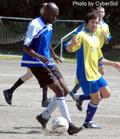

|  |
Yokota's 'Gee' shields the ball from Andy of Clash. |
Sun 24th April, A game on Sunday at Oi dirt between Wall Street Clash and Yokota FC offered up one of the most fascinating and action packed games of the TML season.
With the Clash virtually guaranteed 10th place in their first season and Yokota FC knowing that a win would assure them of promotion many were expecting a one sided affair. This would not be the case.
The game was made more interesting before kick off when the ref counted out the teams to find that both sides had ten players each - no subs, a hot day and a big pitch........
The added problem for the Clash was the lack of a recognised goalkeeper - 2 "volunteers" were sold on the idea with the words "only break you'll get".
Clash immediately attacked Yokota with style and verve. Great passing movements were led by Yasuyuki, Andy D, Yu and Tony (playing his best game of the season).
A few chances were created by both teams, with Yokota forced to shoot from way out not troubling Matthew Best (the first "volunteer" debuting in goal).
A smart tactical move (he'd completed his time in goal!) by Ian, coach for the day, saw Best swapping goalie duties with Rich. Possibly a minute later, Best was found in space just inside the box by Andy D, and he struck the ball superbly into the top corner of the Yokota goal. Clash 1 Yokota FC 0.
Half time came, with both team's 10 players seeking much needed refreshment.
The second half got underway, and followed the same pattern, Clash looking quite comfortable at 1-0. Things changed dramatically with about 20 minutes to go. A seemingly routine corner was not cleared, a goalmouth scramble ensued with Ian trying to hook the ball clear from a congested area only to fall to Yokota's tricky striker. He tried to advance but was needlessly tripped. Penalty!
Yokota's midfield playmaker stepped up to take it, looking a little certain. He went for the top corner with power but was denied by a stunning save from Rich who tipped it onto the bar.
Clash breathed again.
A huge incident, which turned the game on its head, occurred with less than 15 minutes to go when the penalty hero, Rich, caught a cross at the back post. With the ball in his hands he was bundled into the post by a clumsy Yokota player. Rich landed on his knee, which twisted, leaving him in agony and unable to continue. He was applauded off the pitch by all players.
The Yokota player was yellow carded but denied any wrongdoing.
A third "volunteer" goalie was required and Pingla, our trusty centre back, stepped forward.
Clash were now down to 9 men.
5 more minutes passed and Clash's left back, Yu, walked off the pitch with an ankle injury......down to 8!!
Drastic reorganization was required with Clash resorting to a 3-5 formation (yes, no strikers!). This put Yokota in the driving seat and despite stout defending (exemplified by Masa) and non-stop running, with a few minutes to go, Taka (who had looked dangerous throughout) was found in space around the penalty spot. He looked up and scooped the ball in to the top corner over the despairing Pingla.
1-1.
This was harsh on the Clash who had played their best game of the season. Yokota FC gave their all but will be relieved to have gained a point. Clash will look forward to next season with new optimism.
CLA |